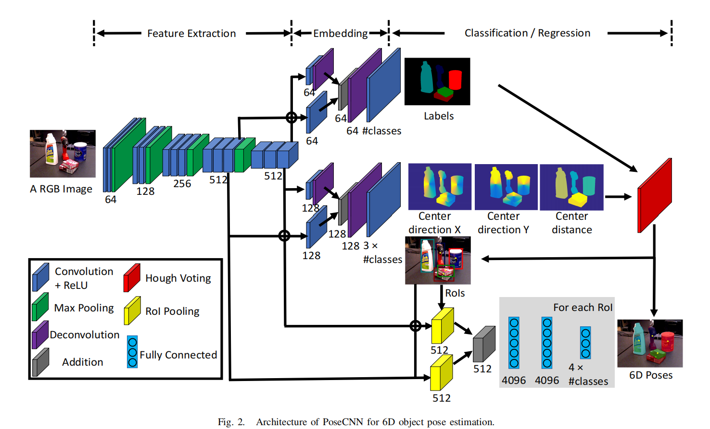
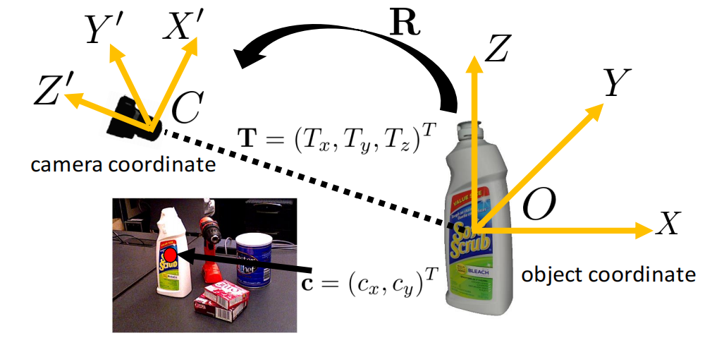
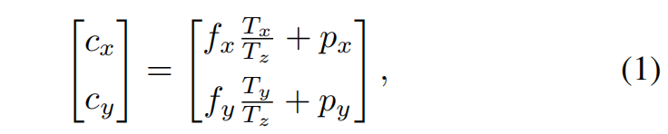
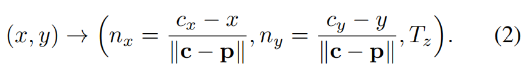
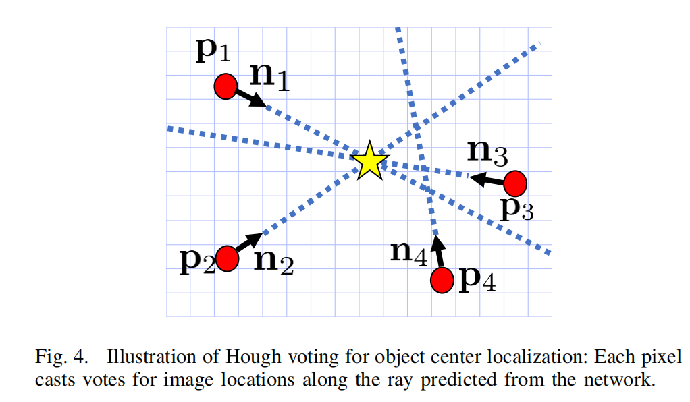
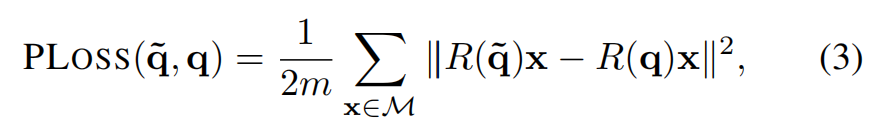
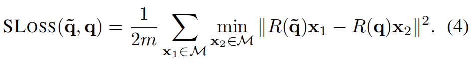
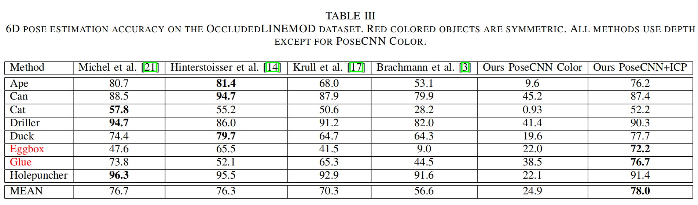
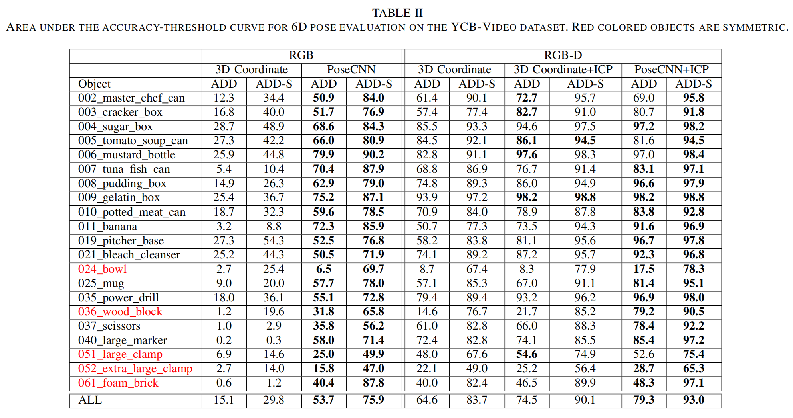

PoseCNN
PoseCNN: A Convolutional Neural Network for 6D Object Pose Estimation in Cluttered Scenes
来源：RSS 2018
代码：https://github.com/NVlabs/PoseCNN-PyTorch
引用量：667
提出的问题
现实中的物体具有不同的三维形状，它们在图像上的外观受到光照条件、杂乱场景和物体之间遮挡的影响，一些物体具有对称性，这给6D姿态估计问题带来了挑战。
已有的方法
- 在3D模型和2D图片之间匹配特征点。这种方法只对那些纹理特征丰富的物体有效。
- 基于RGB-D的方法可以应对表面纹理较少的物体。
- 基于模板的方法：构造一个刚性模板，用于扫描输入图像中的不同位置。在每个位置计算相似分数，通过比较这些相似分数获得最佳匹配。这类方法虽然可以解决物体纹理较少的问题，但是物体之间的相互遮挡会降低识别性能。
- 基于特征的方法：从点或图像中的每个像素提取局部特征，并与三维模型上的特征匹配，建立3D-3D对应关系。这类方法可以解决遮挡问题，但需要物体表面纹理丰富才能提出好的局部特征。虽然后来直接回归每一个像素点对应的3D坐标来建立2D-3D对应关系的方式解决了纹理较少的问题，但对于对称的物体会失效。
本文的方法
- 结合了基于模板和基于特征这两类方法的优点。
- 自下而上的像素标记与自上而下的物体姿态回归。
方法的细节
整个网络分为两部分，第一部分是个骨干网络，用于提取不同尺度的特征；第二部分将提取的特征分别应用到3个不同的子任务上，最终输出预测的6D姿态。

(后续结合深度图，使用ICP做优化，可以使得效果更好)
1. Semantic Labeling
为了检测出一张图中的所有物体，需要做语义分割。
作者借鉴了FCN的思想来设计语义分割网络。
2. 3D Translation Estimation
$T = (T_x, T_y, T_z)$，指的是相机坐标系下的物体原点(origin)的坐标。
一种比较naive的方法是直接用图像特征来回归$T$。但每个物体在图像中的位置是不定的，而且可能存在许多物体属于同一类别的情况，在这些情况下，此法行不通。
作者的方法是：首先定位二维图像中物体的中心，然后估计物体与摄像机的距离。

假设$T$在图像上的投影为$c={(c_x,c_y)}^T$，如果已知$c$，且已知$T_z$，那么就能够根据下面的投影公式恢复$T_x$和$T_y$（使用针孔相机）：

其中，$f_x$和$f_y$是相机焦距，$p_x$和$p_y$是principal point（？）。
如果物体原点$O$是物体的质心，那么这里的$c$就可以叫做物体的中心(center)。
定位二维图像中物体中心的一种直接方法是像现有的关键点检测方法那样直接检测中心点，但是这种方法在物体存在遮挡的情况下用不了。
借鉴Implicit Shape Model (ISM)的思想， we design our
network to regress to the center direction for each pixel in the image.
这一过程被称为中心回归(center regression)。
具体来说，对于图像中的每一个像素$p={(x,y)}^T$，通过回归得到3个变量：

为了定位物体的中心$c$，作者引入了Hough voting layer。该层的输入是之前的语义分割结果+中心回归结果。对于物体类，它首先计算图像中每个位置的投票分数。投票分数表示相应的图像位置是类中物体中心的可能性，选择得分最高的位置作为中心。

对于图像中可能出现的同一类别多个实例的情况，对投票分数应用非极大抑制，然后选择分数大于某个阈值的位置。
在得到许多物体中心后，对于每一个物体的中心，将投票给该中心的所有像素点视为inliers，$T_z$就等于由这些inliers预测得到的深度(depths)的平均值。
将$c$和$T_z$代入上面的公式(1)，就得到了平移矩阵$T$.
此外，网络会生成物体的bounding box，框内是inliers，这里的bounding box被用于接下来的3D Rotation Regression.
3. 3D Rotation Regression
通过回归四元数来得到旋转矩阵$R$。
为了回归四元数，作者提出了两个loss。
(1) PoseLoss (PLOSS)

其中,$M$是3D模型，$m$是3D模型中的总点数,$R(˜q)$和$R(q)$分别表示由估计的四元数和真实的四元数计算出的旋转矩阵$R$.（3D? 具体算？)
(2) ShapeMatch-Loss (SLOSS)
PLOSS本身不能处理具有对称性的物体，于是作者提出了SLOSS：

实验结果

